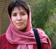

پذيرش > تریبون > گفت و گو > سمیه رشیدی: باید این خشم را آگاهانه هدایت کنی تا بتوانی مقاومت کنی ( سمیه باید آزاد (...)


 سمیه رشیدی: باید این خشم را آگاهانه هدایت کنی تا بتوانی مقاومت کنی ( سمیه باید آزاد شود) سمیه رشیدی: باید این خشم را آگاهانه هدایت کنی تا بتوانی مقاومت کنی ( سمیه باید آزاد شود)
10 دی 1388 - - نسخه قابل چاپ
تغییر برای برابری – در حال و هوای درگیری ها و بازداشت های گسترده خیابانی، پی گیری وضعیت سمیه رشیدی از فعالان کمپین و دانشجویی دشوار تر شده است . حدود 10 روز از بازداشت سمیه می گذرد و او همچنان در زندان است . در میان دانشجویان ستاره دار نیز علاوه بر شیوا نظرآهاری که در راه رفتن به قم و شرکت در مراسم ختم آیت الله منتظری بازداشت شد چند تن از فعالان دانشجویی ستاره دار نیز در زندان هستند. سمیه از ورود به دانشگاه های آزاد و سراسری برای مقطع فوق لیسانس در رشته مطالعات زنان محروم شد. گویا ستاره دار بودن برای ورود به "دانشگاه اوین" امتیاز محسوب می شود. پس از محرومیت او از تحصیل گفتگویی با او داشتیم که می خوانید.
تغییر برای برابری - سمیه جان تو یکی از فعالان کمپین یک میلیون امضا هستی که مجبور به پرداخت هزینه های زیادی شدی. با کسب رتبه عالی در کنکور کارشناسی ارشد از ادامه تحصیل در رشته مطالعات زنان محروم شدی. می توانی در این مورد توضیح دهی؟
سمیه - (با خنده)البته قبل از ستاره دار شدن و ممنوع التحصیل شدن از کارم هم اخراج شده بودم.
تغییر برای برابری - از کار هم اخراج شده بودی؟ می توانی ابتدا در این مورد توضیح بیشتری بدهی؟
ماه های اول فعالیت کمپین به دلیل جمع آوری امضا در محیط کارم دچار مشکل شدم. در پژوهشکده ماهان کار می کردم که یک موسسه آموزشی بود و در کنار آن پژوهشکده ای هم راه اندازی کرده بودند و قصد داشتند طرحی در مورد اعتبارسنجی دانشگاه ها انجام دهند. این طرح، بحث نو و جدیدی بود و من هم از کار کردن در این مجموعه خیلی راضی بودم. یک روز در محیط کار، بحثی در مورد زنان مطرح شد. من هم بحث کمپین را مطرح کردم و بعد از توضیح درباره فعالیت مان، برگه های امضا را به همکارانم دادم. تعدادی از آنان امضا کردند ولی یکی دونفر هم گفتند که خواسته های شما ضددین و ضداسلام است. البته من هم استدلال های خودم را در مورد این که خواسته های ما هیچ ضدیتی با اسلام ندارد، مطرح کردم. فردای همان روز با من تماس گرفتند که برای تسویه حساب تشریف بیاورید. البته خیلی محترمانه این مساله را مطرح کردند و گفتند که شما فرد فعالی هستید. ولی این تسویه حساب مفهومش همان اخراج بود. خیلی این قضیه برایم ناراحت کننده بود. در بعضی موارد پیش می آید که فعالیت کاری و اجتماعی افراد با هم یکی می شود. خب حالا مگر چه می شود که فعال کمپین یک میلیون امضا هم باشم؟ آیا این دلیلی برای اخراج از کار است؟ خب بعد از این اتفاقات سعی کردم خودم را تقویت کنم و فرصت ها و جاهای جدیدتر را پیدا کنم.
تغییر - باز هم به فعالیتت در کمپین ادامه دادی؟
سمیه - البته. تصمیم گرفته بودم که برای کارشناسی ارشد مطالعات زنان بخوانم و یکی از فعالان کمپین یک میلیون امضا هم بودم. خب آنها هم می دانستند که نباید این ارتباط شکل بگیرد، یعنی نباید فعالیت جنبش دانشجویی و جنبش زنان با هم ارتباط پیدا کند. پس باید جلوی ورود تعدادی از ما به عرصه های دانشگاهی گرفته شد تا نتوانیم روی فضاهای دانشگاهی تاثیرگذار باشیم.
وقتی از ورودم به دانشگاه جلوگیری کردند خیلی ناراحت نشدم، البته به خاطر خانواده ام ناراحت شدم چون دلم می خواست آنها را خوشحال کنم. ولی از طرفی می دانستم که چیزی از دست نداده ام، مگر در رشته مطالعات زنان در دانشگاه های ایران چه چیزی به ما آموزش می دهند؟ باید ببینم برای کار در حوزه زنان چه نقاط ضعفی دارم و خودم را در آن بخش توانمند کنم. باید بیشتر بخوانم و تحقیق کنم و قوی تر باشم. یکی از دوستانم می گفت حالا اگر دانشگاه نروی چه چیزی را از دست می دهی؟ مدرک و ... ولی بحث اینجاست که من فضای دانشگاهی و بروز بودن در حوزه زنان را دوست دارم و همین باعث می شد که حریص تر باشم نسبت به دانستن اتفاقات این حوزه. زمانی که مشغول درس خواندن برای کارشناسی ارشد بودم، فرصت زیادی برای به روز بودن در حوزه زنان نداشتم ولی الان به این فکر می کنم که باید کتاب های جدید حوزه زنان و یا دیگر حوزه های مرتبط را بخوانم یا این که یک گروه زنان راه اندازی کنیم.
یک تصویر منفی هم نسبت به ممانعت از ادامه تحصیلم دارم؛ البته منفی که نمی شود گفت ولی خب خشم نسبت به این قضیه است. بیشتر خشمگینی و مدام به یاد می آوری که اینها حتی جلوی قدرت انتخاب ما را هم گرفته اند. از همان ابتدا هم به عنوان یک زن در جامعه ایرانی قدرت انتخاب نداشته ای ولی این مساله مدام برایت ملموس تر می شود. البته باید این خشم را آگاهانه هدایت کنی تا بتوانی مقاومت کنی و به راهت ادامه دهی.
سمیه در چه خانواده ای بزرگ شدی؟ آیا با مقاومت نسبت به خواسته هایت مواجه بودی؟
من در یک خانواده مذهبی بزرگ شدم. دو تا برادر دارم و نه خیلی آشکار ولی از همان ابتدا متوجه تفاوت ها و تبعیض ها می شدم. نه فقط از طرف خانواده از طرف همه، چون در یک خانواده سنتی مذهبی پسرها آزادی های خیلی بیشتری نسبت به یک دختر دارند؛ آزادی های کلامی، رفتاری و ...
فکر می کنی دغدغه ات برای ورود به حوزه زنان بیشتر تبعیض هایی بوده که مشاهده کردی؟
یک قسمتش به همین دلیل بوده است. تجربه زندگی من درانتخاب راه و رشته ای که قصد مطالعه داشتم قطعا تاثیر داشته.
ممنون
ارسال به
بالاترین
،
توییتر
،
فریندفید
،
فیسبوک
در همين بخش :
 دهمین دورۀ مراسم تندیس صدیقه دولت آبادی ۱۳۹۲ دهمین دورۀ مراسم تندیس صدیقه دولت آبادی ۱۳۹۲
کارت پستالهایی به بهانهی هشت مارس و به یاد همهی مبارزین راه برابری
بیانیه بیش از 350 تن از مدافعان حقوق زنان به مناسبت روز جهانی زن؛ زنان هر روز فرودستتر میشوند
لباسی که برای تن ما دوخته اند! /اعظم بهرامی
چالشها و چشمانداز فعالیت مدنی زنان
ديگر بخش ها :
طرح یک میلیون امضا
|
مقالات
|
سایت نوشته ها
|
اخبار
|
گزارش كمپين
|
گفت و گو
|
علیه سکوت
|
كوچه به كوچه
|
نامه های شما
|
گزارش ویژه
|
گفتگو با اعضا
|
ویژه سالگرد کمپین
|
تصویر برابری
|
دل آرام علی
|
تریبون
|
مقالات
|
تاریخ شفاهی
|
خارج از چارچوب
|
کتابخانه
|
درباره کمپین
|
کمپین در شهرها
|
کمپین در بند
|
صدای تغییر
|
ویژه 22 خرداد
|
لایحه حمایت از خانواده
|
گالری
|
عشا مومنی
|
امیر یعقوبعلی
|
خدیجه مقدم
|
راحله عسگری زاده و نسیم خسروی
|
پروین اردلان،جلوه جواهری، مریم حسین خواه، ناهید کشاورز
|
زینب پیغمبرزاده
|
سعیده امین، سارا ایمانیان، محبوبه حسین زاده، ناهید کشاورز و همایون نامی
|
احترام شادفر
|
نسیم سرابندی زاده،فاطمه دهدشتی
|
وبلاگ مهمان
|
پرونده خرم آباد
|
دستگیری ها
|
مریم مالک
|
پرستو اللهیاری
|
مهرنوش اعتمادی
|
سمیه رشیدی
|
Other Languages
|
همراهان
|
«فراخوان کمپین ده روز با بهاره هدایت»
| English
|